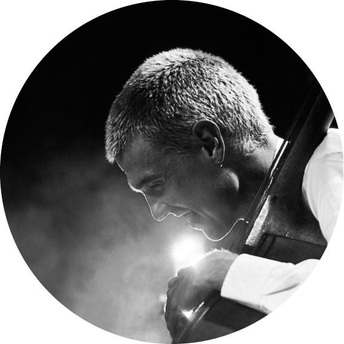

|  |
Martin Brunbjerg Rasmussen
Double bassist, jazz musician and member of Little North
Martin has a sharp artistic profile that unfolds through his own music, with a versatility that allows him to be a part of many different projects and bands. He makes a name for himself with the critically acclaimed piano trio Little
North. He speaks freely through his instrument with an original voice. with his imaginative playing, he help to shape the music, and switches effortlessly between thythmic complaxity and moody, melodic bass passages
|